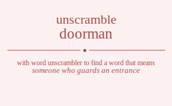

The word found after unscrambling doorman means that someone who guards an entrance, .

The word found after unscrambling doorman means that someone who guards an entrance, .
You can also find solutions for different combinations of letters in doorman like doorman doormna dooramn dooranm doornma doornam doomran doomrna doomarn doomanr doomnra doomnar dooarmn dooarnm dooamrn dooamnr dooanrm dooanmr doonrma doonram doonmra doonmar doonarm doonamr doroman doromna doroamn doroanm doronma doronam dormoan dormona dormaon dormano dormnoa dormnao doraomn doraonm doramon doramno doranom doranmo dornoma dornoam dornmoa dornmao dornaom dornamo domoran domorna domoarn domoanr domonra domonar domroan domrona domraon domrano domrnoa domrnao domaorn domaonr domaron domarno domanor domanro domnora domnoar domnroa domnrao domnaor domnaro doaormn doaornm doaomrn doaomnr doaonrm doaonmr doaromn doaronm doarmon doarmno doarnom doarnmo doamorn doamonr doamron doamrno doamnor doamnro doanorm doanomr doanrom doanrmo doanmor doanmro donorma donoram donomra donomar donoarm donoamr donroma donroam donrmoa donrmao donraom donramo donmora donmoar donmroa donmrao donmaor donmaro donaorm donaomr donarom donarmo donamor donamro doorman doormna dooramn dooranm doornma doornam doomran doomrna doomarn doomanr doomnra doomnar dooarmn dooarnm dooamrn dooamnr dooanrm dooanmr doonrma doonram doonmra doonmar doonarm doonamr doroman doromna doroamn doroanm doronma doronam dormoan dormona dormaon dormano dormnoa dormnao doraomn doraonm doramon doramno doranom doranmo dornoma dornoam dornmoa dornmao dornaom dornamo domoran domorna domoarn domoanr domonra domonar domroan domrona domraon domrano domrnoa domrnao domaorn domaonr domaron domarno domanor domanro domnora domnoar domnroa domnrao domnaor domnaro doaormn doaornm doaomrn doaomnr doaonrm doaonmr doaromn doaronm doarmon doarmno doarnom doarnmo doamorn doamonr doamron doamrno doamnor doamnro doanorm doanomr doanrom doanrmo doanmor doanmro donorma donoram donomra donomar donoarm donoamr donroma donroam donrmoa donrmao donraom donramo donmora donmoar donmroa donmrao donmaor donmaro donaorm donaomr donarom donarmo donamor donamro drooman droomna drooamn drooanm droonma droonam dromoan dromona dromaon dromano dromnoa dromnao droaomn droaonm droamon droamno droanom droanmo dronoma dronoam dronmoa dronmao dronaom dronamo drooman droomna drooamn drooanm droonma droonam dromoan dromona dromaon dromano dromnoa dromnao droaomn droaonm droamon droamno droanom droanmo dronoma dronoam dronmoa dronmao dronaom dronamo drmooan drmoona drmoaon drmoano drmonoa drmonao drmooan drmoona drmoaon drmoano drmonoa drmonao drmaoon drmaono drmaoon drmaono drmanoo drmanoo drmnooa drmnoao drmnooa drmnoao drmnaoo drmnaoo draoomn draoonm draomon draomno draonom draonmo draoomn draoonm draomon draomno draonom draonmo dramoon dramono dramoon dramono dramnoo dramnoo dranoom dranomo dranoom dranomo dranmoo dranmoo drnooma drnooam drnomoa drnomao drnoaom drnoamo drnooma drnooam drnomoa drnomao drnoaom drnoamo drnmooa drnmoao drnmooa drnmoao drnmaoo drnmaoo drnaoom drnaomo drnaoom drnaomo drnamoo drnamoo dmooran dmoorna dmooarn dmooanr dmoonra dmoonar dmoroan dmorona dmoraon dmorano dmornoa dmornao dmoaorn dmoaonr dmoaron dmoarno dmoanor dmoanro dmonora dmonoar dmonroa dmonrao dmonaor dmonaro dmooran dmoorna dmooarn dmooanr dmoonra dmoonar dmoroan dmorona dmoraon dmorano dmornoa dmornao dmoaorn dmoaonr dmoaron dmoarno dmoanor dmoanro dmonora dmonoar dmonroa dmonrao dmonaor dmonaro dmrooan dmroona dmroaon dmroano dmronoa dmronao dmrooan dmroona dmroaon dmroano dmronoa dmronao dmraoon dmraono dmraoon dmraono dmranoo dmranoo dmrnooa dmrnoao dmrnooa dmrnoao dmrnaoo dmrnaoo dmaoorn dmaoonr dmaoron dmaorno dmaonor dmaonro dmaoorn dmaoonr dmaoron dmaorno dmaonor dmaonro dmaroon dmarono dmaroon dmarono dmarnoo dmarnoo dmanoor dmanoro dmanoor dmanoro dmanroo dmanroo dmnoora dmnooar dmnoroa dmnorao dmnoaor dmnoaro dmnoora dmnooar dmnoroa dmnorao dmnoaor dmnoaro dmnrooa dmnroao dmnrooa dmnroao dmnraoo dmnraoo dmnaoor dmnaoro dmnaoor dmnaoro dmnaroo dmnaroo daoormn daoornm daoomrn daoomnr daoonrm daoonmr daoromn daoronm daormon daormno daornom daornmo daomorn daomonr daomron daomrno daomnor daomnro daonorm daonomr daonrom daonrmo daonmor daonmro daoormn daoornm daoomrn daoomnr daoonrm daoonmr daoromn daoronm daormon daormno daornom daornmo daomorn daomonr daomron daomrno daomnor daomnro daonorm daonomr daonrom daonrmo daonmor daonmro daroomn daroonm daromon daromno daronom daronmo daroomn daroonm daromon daromno daronom daronmo darmoon darmono darmoon darmono darmnoo darmnoo darnoom darnomo darnoom darnomo darnmoo darnmoo damoorn damoonr damoron damorno damonor damonro damoorn damoonr damoron damorno damonor damonro damroon damrono damroon damrono damrnoo damrnoo damnoor damnoro damnoor damnoro damnroo damnroo danoorm danoomr danorom danormo danomor danomro danoorm danoomr danorom danormo danomor danomro danroom danromo danroom danromo danrmoo danrmoo danmoor danmoro danmoor danmoro danmroo danmroo dnoorma dnooram dnoomra dnoomar dnooarm dnooamr dnoroma dnoroam dnormoa dnormao dnoraom dnoramo dnomora dnomoar dnomroa dnomrao dnomaor dnomaro dnoaorm dnoaomr dnoarom dnoarmo dnoamor dnoamro dnoorma dnooram dnoomra dnoomar dnooarm dnooamr dnoroma dnoroam dnormoa dnormao dnoraom dnoramo dnomora dnomoar dnomroa dnomrao dnomaor dnomaro dnoaorm dnoaomr dnoarom dnoarmo dnoamor dnoamro dnrooma dnrooam dnromoa dnromao dnroaom dnroamo dnrooma dnrooam dnromoa dnromao dnroaom dnroamo dnrmooa dnrmoao dnrmooa dnrmoao dnrmaoo dnrmaoo dnraoom dnraomo dnraoom dnraomo dnramoo dnramoo dnmoora dnmooar dnmoroa dnmorao dnmoaor dnmoaro dnmoora dnmooar dnmoroa dnmorao dnmoaor dnmoaro dnmrooa dnmroao dnmrooa dnmroao dnmraoo dnmraoo dnmaoor dnmaoro dnmaoor dnmaoro dnmaroo dnmaroo dnaoorm dnaoomr dnaorom dnaormo dnaomor dnaomro dnaoorm dnaoomr dnaorom dnaormo dnaomor dnaomro dnaroom dnaromo dnaroom dnaromo dnarmoo dnarmoo dnamoor dnamoro dnamoor dnamoro dnamroo dnamroo odorman odormna odoramn odoranm odornma odornam odomran odomrna odomarn odomanr odomnra odomnar odoarmn odoarnm odoamrn odoamnr odoanrm odoanmr odonrma odonram odonmra odonmar odonarm odonamr odroman odromna odroamn odroanm odronma odronam odrmoan odrmona odrmaon odrmano odrmnoa odrmnao odraomn odraonm odramon odramno odranom odranmo odrnoma odrnoam odrnmoa odrnmao odrnaom odrnamo odmoran odmorna odmoarn odmoanr odmonra odmonar odmroan odmrona odmraon odmrano odmrnoa odmrnao odmaorn odmaonr odmaron odmarno odmanor odmanro odmnora odmnoar odmnroa odmnrao odmnaor odmnaro odaormn odaornm odaomrn odaomnr odaonrm odaonmr odaromn odaronm odarmon odarmno odarnom odarnmo odamorn odamonr odamron odamrno odamnor odamnro odanorm odanomr odanrom odanrmo odanmor odanmro odnorma odnoram odnomra odnomar odnoarm odnoamr odnroma odnroam odnrmoa odnrmao odnraom odnramo odnmora odnmoar odnmroa odnmrao odnmaor odnmaro odnaorm odnaomr odnarom odnarmo odnamor odnamro oodrman oodrmna oodramn oodranm oodrnma oodrnam oodmran oodmrna oodmarn oodmanr oodmnra oodmnar oodarmn oodarnm oodamrn oodamnr oodanrm oodanmr oodnrma oodnram oodnmra oodnmar oodnarm oodnamr oordman oordmna oordamn oordanm oordnma oordnam oormdan oormdna oormadn oormand oormnda oormnad ooradmn ooradnm ooramdn ooramnd oorandm ooranmd oorndma oorndam oornmda oornmad oornadm oornamd oomdran oomdrna oomdarn oomdanr oomdnra oomdnar oomrdan oomrdna oomradn oomrand oomrnda oomrnad oomadrn oomadnr oomardn oomarnd oomandr oomanrd oomndra oomndar oomnrda oomnrad oomnadr oomnard ooadrmn ooadrnm ooadmrn ooadmnr ooadnrm ooadnmr ooardmn ooardnm ooarmdn ooarmnd ooarndm ooarnmd ooamdrn ooamdnr ooamrdn ooamrnd ooamndr ooamnrd ooandrm ooandmr ooanrdm ooanrmd ooanmdr ooanmrd oondrma oondram oondmra oondmar oondarm oondamr oonrdma oonrdam oonrmda oonrmad oonradm oonramd oonmdra oonmdar oonmrda oonmrad oonmadr oonmard oonadrm oonadmr oonardm oonarmd oonamdr oonamrd ordoman ordomna ordoamn ordoanm ordonma ordonam ordmoan ordmona ordmaon ordmano ordmnoa ordmnao ordaomn ordaonm ordamon ordamno ordanom ordanmo ordnoma ordnoam ordnmoa ordnmao ordnaom ordnamo orodman orodmna orodamn orodanm orodnma orodnam oromdan oromdna oromadn oromand oromnda oromnad oroadmn oroadnm oroamdn oroamnd oroandm oroanmd orondma orondam oronmda oronmad oronadm oronamd ormdoan ormdona ormdaon ormdano ormdnoa ormdnao ormodan ormodna ormoadn ormoand ormonda ormonad ormadon ormadno ormaodn ormaond ormando ormanod ormndoa ormndao ormnoda ormnoad ormnado ormnaod oradomn oradonm oradmon oradmno oradnom oradnmo oraodmn oraodnm oraomdn oraomnd oraondm oraonmd oramdon oramdno oramodn oramond oramndo oramnod orandom orandmo oranodm oranomd oranmdo oranmod orndoma orndoam orndmoa orndmao orndaom orndamo ornodma ornodam ornomda ornomad ornoadm ornoamd ornmdoa ornmdao ornmoda ornmoad ornmado ornmaod ornadom ornadmo ornaodm ornaomd ornamdo ornamod omdoran omdorna omdoarn omdoanr omdonra omdonar omdroan omdrona omdraon omdrano omdrnoa omdrnao omdaorn omdaonr omdaron omdarno omdanor omdanro omdnora omdnoar omdnroa omdnrao omdnaor omdnaro omodran omodrna omodarn omodanr omodnra omodnar omordan omordna omoradn omorand omornda omornad omoadrn omoadnr omoardn omoarnd omoandr omoanrd omondra omondar omonrda omonrad omonadr omonard omrdoan omrdona omrdaon omrdano omrdnoa omrdnao omrodan omrodna omroadn omroand omronda omronad omradon omradno omraodn omraond omrando omranod omrndoa omrndao omrnoda omrnoad omrnado omrnaod omadorn omadonr omadron omadrno omadnor omadnro omaodrn omaodnr omaordn omaornd omaondr omaonrd omardon omardno omarodn omarond omarndo omarnod omandor omandro omanodr omanord omanrdo omanrod omndora omndoar omndroa omndrao omndaor omndaro omnodra omnodar omnorda omnorad omnoadr omnoard omnrdoa omnrdao omnroda omnroad omnrado omnraod omnador omnadro omnaodr omnaord omnardo omnarod oadormn oadornm oadomrn oadomnr oadonrm oadonmr oadromn oadronm oadrmon oadrmno oadrnom oadrnmo oadmorn oadmonr oadmron oadmrno oadmnor oadmnro oadnorm oadnomr oadnrom oadnrmo oadnmor oadnmro oaodrmn oaodrnm oaodmrn oaodmnr oaodnrm oaodnmr oaordmn oaordnm oaormdn oaormnd oaorndm oaornmd oaomdrn oaomdnr oaomrdn oaomrnd oaomndr oaomnrd oaondrm oaondmr oaonrdm oaonrmd oaonmdr oaonmrd oardomn oardonm oardmon oardmno oardnom oardnmo oarodmn oarodnm oaromdn oaromnd oarondm oaronmd oarmdon oarmdno oarmodn oarmond oarmndo oarmnod oarndom oarndmo oarnodm oarnomd oarnmdo oarnmod oamdorn oamdonr oamdron oamdrno oamdnor oamdnro oamodrn oamodnr oamordn oamornd oamondr oamonrd oamrdon oamrdno oamrodn oamrond oamrndo oamrnod oamndor oamndro oamnodr oamnord oamnrdo oamnrod oandorm oandomr oandrom oandrmo oandmor oandmro oanodrm oanodmr oanordm oanormd oanomdr oanomrd oanrdom oanrdmo oanrodm oanromd oanrmdo oanrmod oanmdor oanmdro oanmodr oanmord oanmrdo oanmrod ondorma ondoram ondomra ondomar ondoarm ondoamr ondroma ondroam ondrmoa ondrmao ondraom ondramo ondmora ondmoar ondmroa ondmrao ondmaor ondmaro ondaorm ondaomr ondarom ondarmo ondamor ondamro onodrma onodram onodmra onodmar onodarm onodamr onordma onordam onormda onormad onoradm onoramd onomdra onomdar onomrda onomrad onomadr onomard onoadrm onoadmr onoardm onoarmd onoamdr onoamrd onrdoma onrdoam onrdmoa onrdmao onrdaom onrdamo onrodma onrodam onromda onromad onroadm onroamd onrmdoa onrmdao onrmoda onrmoad onrmado onrmaod onradom onradmo onraodm onraomd onramdo onramod onmdora onmdoar onmdroa onmdrao onmdaor onmdaro onmodra onmodar onmorda onmorad onmoadr onmoard onmrdoa onmrdao onmroda onmroad onmrado onmraod onmador onmadro onmaodr onmaord onmardo onmarod onadorm onadomr onadrom onadrmo onadmor onadmro onaodrm onaodmr onaordm onaormd onaomdr onaomrd onardom onardmo onarodm onaromd onarmdo onarmod onamdor onamdro onamodr onamord onamrdo onamrod odorman odormna odoramn odoranm odornma odornam odomran odomrna odomarn odomanr odomnra odomnar odoarmn odoarnm odoamrn odoamnr odoanrm odoanmr odonrma odonram odonmra odonmar odonarm odonamr odroman odromna odroamn odroanm odronma odronam odrmoan odrmona odrmaon odrmano odrmnoa odrmnao odraomn odraonm odramon odramno odranom odranmo odrnoma odrnoam odrnmoa odrnmao odrnaom odrnamo odmoran odmorna odmoarn odmoanr odmonra odmonar odmroan odmrona odmraon odmrano odmrnoa odmrnao odmaorn odmaonr odmaron odmarno odmanor odmanro odmnora odmnoar odmnroa odmnrao odmnaor odmnaro odaormn odaornm odaomrn odaomnr odaonrm odaonmr odaromn odaronm odarmon odarmno odarnom odarnmo odamorn odamonr odamron odamrno odamnor odamnro odanorm odanomr odanrom odanrmo odanmor odanmro odnorma odnoram odnomra odnomar odnoarm odnoamr odnroma odnroam odnrmoa odnrmao odnraom odnramo odnmora odnmoar odnmroa odnmrao odnmaor odnmaro odnaorm odnaomr odnarom odnarmo odnamor odnamro oodrman oodrmna oodramn oodranm oodrnma oodrnam oodmran oodmrna oodmarn oodmanr oodmnra oodmnar oodarmn oodarnm oodamrn oodamnr oodanrm oodanmr oodnrma oodnram oodnmra oodnmar oodnarm oodnamr oordman oordmna oordamn oordanm oordnma oordnam oormdan oormdna oormadn oormand oormnda oormnad ooradmn ooradnm ooramdn ooramnd oorandm ooranmd oorndma oorndam oornmda oornmad oornadm oornamd oomdran oomdrna oomdarn oomdanr oomdnra oomdnar oomrdan oomrdna oomradn oomrand oomrnda oomrnad oomadrn oomadnr oomardn oomarnd oomandr oomanrd oomndra oomndar oomnrda oomnrad oomnadr oomnard ooadrmn ooadrnm ooadmrn ooadmnr ooadnrm ooadnmr ooardmn ooardnm ooarmdn ooarmnd ooarndm ooarnmd ooamdrn ooamdnr ooamrdn ooamrnd ooamndr ooamnrd ooandrm ooandmr ooanrdm ooanrmd ooanmdr ooanmrd oondrma oondram oondmra oondmar oondarm oondamr oonrdma oonrdam oonrmda oonrmad oonradm oonramd oonmdra oonmdar oonmrda oonmrad oonmadr oonmard oonadrm oonadmr oonardm oonarmd oonamdr oonamrd ordoman ordomna ordoamn ordoanm ordonma ordonam ordmoan ordmona ordmaon ordmano ordmnoa ordmnao ordaomn ordaonm ordamon ordamno ordanom ordanmo ordnoma ordnoam ordnmoa ordnmao ordnaom ordnamo orodman orodmna orodamn orodanm orodnma orodnam oromdan oromdna oromadn oromand oromnda oromnad oroadmn oroadnm oroamdn oroamnd oroandm oroanmd orondma orondam oronmda oronmad oronadm oronamd ormdoan ormdona ormdaon ormdano ormdnoa ormdnao ormodan ormodna ormoadn ormoand ormonda ormonad ormadon ormadno ormaodn ormaond ormando ormanod ormndoa ormndao ormnoda ormnoad ormnado ormnaod oradomn oradonm oradmon oradmno oradnom oradnmo oraodmn oraodnm oraomdn oraomnd oraondm oraonmd oramdon oramdno oramodn oramond oramndo oramnod orandom orandmo oranodm oranomd oranmdo oranmod orndoma orndoam orndmoa orndmao orndaom orndamo ornodma ornodam ornomda ornomad ornoadm ornoamd ornmdoa ornmdao ornmoda ornmoad ornmado ornmaod ornadom ornadmo ornaodm ornaomd ornamdo ornamod omdoran omdorna omdoarn omdoanr omdonra omdonar omdroan omdrona omdraon omdrano omdrnoa omdrnao omdaorn omdaonr omdaron omdarno omdanor omdanro omdnora omdnoar omdnroa omdnrao omdnaor omdnaro omodran omodrna omodarn omodanr omodnra omodnar omordan omordna omoradn omorand omornda omornad omoadrn omoadnr omoardn omoarnd omoandr omoanrd omondra omondar omonrda omonrad omonadr omonard omrdoan omrdona omrdaon omrdano omrdnoa omrdnao omrodan omrodna omroadn omroand omronda omronad omradon omradno omraodn omraond omrando omranod omrndoa omrndao omrnoda omrnoad omrnado omrnaod omadorn omadonr omadron omadrno omadnor omadnro omaodrn omaodnr omaordn omaornd omaondr omaonrd omardon omardno omarodn omarond omarndo omarnod omandor omandro omanodr omanord omanrdo omanrod omndora omndoar omndroa omndrao omndaor omndaro omnodra omnodar omnorda omnorad omnoadr omnoard omnrdoa omnrdao omnroda omnroad omnrado omnraod omnador omnadro omnaodr omnaord omnardo omnarod oadormn oadornm oadomrn oadomnr oadonrm oadonmr oadromn oadronm oadrmon oadrmno oadrnom oadrnmo oadmorn oadmonr oadmron oadmrno oadmnor oadmnro oadnorm oadnomr oadnrom oadnrmo oadnmor oadnmro oaodrmn oaodrnm oaodmrn oaodmnr oaodnrm oaodnmr oaordmn oaordnm oaormdn oaormnd oaorndm oaornmd oaomdrn oaomdnr oaomrdn oaomrnd oaomndr oaomnrd oaondrm oaondmr oaonrdm oaonrmd oaonmdr oaonmrd oardomn oardonm oardmon oardmno oardnom oardnmo oarodmn oarodnm oaromdn oaromnd oarondm oaronmd oarmdon oarmdno oarmodn oarmond oarmndo oarmnod oarndom oarndmo oarnodm oarnomd oarnmdo oarnmod oamdorn oamdonr oamdron oamdrno oamdnor oamdnro oamodrn oamodnr oamordn oamornd oamondr oamonrd oamrdon oamrdno oamrodn oamrond oamrndo oamrnod oamndor oamndro oamnodr oamnord oamnrdo oamnrod oandorm oandomr oandrom oandrmo oandmor oandmro oanodrm oanodmr oanordm oanormd oanomdr oanomrd oanrdom oanrdmo oanrodm oanromd oanrmdo oanrmod oanmdor oanmdro oanmodr oanmord oanmrdo oanmrod ondorma ondoram ondomra ondomar ondoarm ondoamr ondroma ondroam ondrmoa ondrmao ondraom ondramo ondmora ondmoar ondmroa ondmrao ondmaor ondmaro ondaorm ondaomr ondarom ondarmo ondamor ondamro onodrma onodram onodmra onodmar onodarm onodamr onordma onordam onormda onormad onoradm onoramd onomdra onomdar onomrda onomrad onomadr onomard onoadrm onoadmr onoardm onoarmd onoamdr onoamrd onrdoma onrdoam onrdmoa onrdmao onrdaom onrdamo onrodma onrodam onromda onromad onroadm onroamd onrmdoa onrmdao onrmoda onrmoad onrmado onrmaod onradom onradmo onraodm onraomd onramdo onramod onmdora onmdoar onmdroa onmdrao onmdaor onmdaro onmodra onmodar onmorda onmorad onmoadr onmoard onmrdoa onmrdao onmroda onmroad onmrado onmraod onmador onmadro onmaodr onmaord onmardo onmarod onadorm onadomr onadrom onadrmo onadmor onadmro onaodrm onaodmr onaordm onaormd onaomdr onaomrd onardom onardmo onarodm onaromd onarmdo onarmod onamdor onamdro onamodr onamord onamrdo onamrod rdooman rdoomna rdooamn rdooanm rdoonma rdoonam rdomoan rdomona rdomaon rdomano rdomnoa rdomnao rdoaomn rdoaonm rdoamon rdoamno rdoanom rdoanmo rdonoma rdonoam rdonmoa rdonmao rdonaom rdonamo rdooman rdoomna rdooamn rdooanm rdoonma rdoonam rdomoan rdomona rdomaon rdomano rdomnoa rdomnao rdoaomn rdoaonm rdoamon rdoamno rdoanom rdoanmo rdonoma rdonoam rdonmoa rdonmao rdonaom rdonamo rdmooan rdmoona rdmoaon rdmoano rdmonoa rdmonao rdmooan rdmoona rdmoaon rdmoano rdmonoa rdmonao rdmaoon rdmaono rdmaoon rdmaono rdmanoo rdmanoo rdmnooa rdmnoao rdmnooa rdmnoao rdmnaoo rdmnaoo rdaoomn rdaoonm rdaomon rdaomno rdaonom rdaonmo rdaoomn rdaoonm rdaomon rdaomno rdaonom rdaonmo rdamoon rdamono rdamoon rdamono rdamnoo rdamnoo rdanoom rdanomo rdanoom rdanomo rdanmoo rdanmoo rdnooma rdnooam rdnomoa rdnomao rdnoaom rdnoamo rdnooma rdnooam rdnomoa rdnomao rdnoaom rdnoamo rdnmooa rdnmoao rdnmooa rdnmoao rdnmaoo rdnmaoo rdnaoom rdnaomo rdnaoom rdnaomo rdnamoo rdnamoo rodoman rodomna rodoamn rodoanm rodonma rodonam rodmoan rodmona rodmaon rodmano rodmnoa rodmnao rodaomn rodaonm rodamon rodamno rodanom rodanmo rodnoma rodnoam rodnmoa rodnmao rodnaom rodnamo roodman roodmna roodamn roodanm roodnma roodnam roomdan roomdna roomadn roomand roomnda roomnad rooadmn rooadnm rooamdn rooamnd rooandm rooanmd roondma roondam roonmda roonmad roonadm roonamd romdoan romdona romdaon romdano romdnoa romdnao romodan romodna romoadn romoand romonda romonad romadon romadno romaodn romaond romando romanod romndoa romndao romnoda romnoad romnado romnaod roadomn roadonm roadmon roadmno roadnom roadnmo roaodmn roaodnm roaomdn roaomnd roaondm roaonmd roamdon roamdno roamodn roamond roamndo roamnod roandom roandmo roanodm roanomd roanmdo roanmod rondoma rondoam rondmoa rondmao rondaom rondamo ronodma ronodam ronomda ronomad ronoadm ronoamd ronmdoa ronmdao ronmoda ronmoad ronmado ronmaod ronadom ronadmo ronaodm ronaomd ronamdo ronamod rodoman rodomna rodoamn rodoanm rodonma rodonam rodmoan rodmona rodmaon rodmano rodmnoa rodmnao rodaomn rodaonm rodamon rodamno rodanom rodanmo rodnoma rodnoam rodnmoa rodnmao rodnaom rodnamo roodman roodmna roodamn roodanm roodnma roodnam roomdan roomdna roomadn roomand roomnda roomnad rooadmn rooadnm rooamdn rooamnd rooandm rooanmd roondma roondam roonmda roonmad roonadm roonamd romdoan romdona romdaon romdano romdnoa romdnao romodan romodna romoadn romoand romonda romonad romadon romadno romaodn romaond romando romanod romndoa romndao romnoda romnoad romnado romnaod roadomn roadonm roadmon roadmno roadnom roadnmo roaodmn roaodnm roaomdn roaomnd roaondm roaonmd roamdon roamdno roamodn roamond roamndo roamnod roandom roandmo roanodm roanomd roanmdo roanmod rondoma rondoam rondmoa rondmao rondaom rondamo ronodma ronodam ronomda ronomad ronoadm ronoamd ronmdoa ronmdao ronmoda ronmoad ronmado ronmaod ronadom ronadmo ronaodm ronaomd ronamdo ronamod rmdooan rmdoona rmdoaon rmdoano rmdonoa rmdonao rmdooan rmdoona rmdoaon rmdoano rmdonoa rmdonao rmdaoon rmdaono rmdaoon rmdaono rmdanoo rmdanoo rmdnooa rmdnoao rmdnooa rmdnoao rmdnaoo rmdnaoo rmodoan rmodona rmodaon rmodano rmodnoa rmodnao rmoodan rmoodna rmooadn rmooand rmoonda rmoonad rmoadon rmoadno rmoaodn rmoaond rmoando rmoanod rmondoa rmondao rmonoda rmonoad rmonado rmonaod rmodoan rmodona rmodaon rmodano rmodnoa rmodnao rmoodan rmoodna rmooadn rmooand rmoonda rmoonad rmoadon rmoadno rmoaodn rmoaond rmoando rmoanod rmondoa rmondao rmonoda rmonoad rmonado rmonaod rmadoon rmadono rmadoon rmadono rmadnoo rmadnoo rmaodon rmaodno rmaoodn rmaoond rmaondo rmaonod rmaodon rmaodno rmaoodn rmaoond rmaondo rmaonod rmandoo rmandoo rmanodo rmanood rmanodo rmanood rmndooa rmndoao rmndooa rmndoao rmndaoo rmndaoo rmnodoa rmnodao rmnooda rmnooad rmnoado rmnoaod rmnodoa rmnodao rmnooda rmnooad rmnoado rmnoaod rmnadoo rmnadoo rmnaodo rmnaood rmnaodo rmnaood radoomn radoonm radomon radomno radonom radonmo radoomn radoonm radomon radomno radonom radonmo radmoon radmono radmoon radmono radmnoo radmnoo radnoom radnomo radnoom radnomo radnmoo radnmoo raodomn raodonm raodmon raodmno raodnom raodnmo raoodmn raoodnm raoomdn raoomnd raoondm raoonmd raomdon raomdno raomodn raomond raomndo raomnod raondom raondmo raonodm raonomd raonmdo raonmod raodomn raodonm raodmon raodmno raodnom raodnmo raoodmn raoodnm raoomdn raoomnd raoondm raoonmd raomdon raomdno raomodn raomond raomndo raomnod raondom raondmo raonodm raonomd raonmdo raonmod ramdoon ramdono ramdoon ramdono ramdnoo ramdnoo ramodon ramodno ramoodn ramoond ramondo ramonod ramodon ramodno ramoodn ramoond ramondo ramonod ramndoo ramndoo ramnodo ramnood ramnodo ramnood randoom randomo randoom randomo randmoo randmoo ranodom ranodmo ranoodm ranoomd ranomdo ranomod ranodom ranodmo ranoodm ranoomd ranomdo ranomod ranmdoo ranmdoo ranmodo ranmood ranmodo ranmood rndooma rndooam rndomoa rndomao rndoaom rndoamo rndooma rndooam rndomoa rndomao rndoaom rndoamo rndmooa rndmoao rndmooa rndmoao rndmaoo rndmaoo rndaoom rndaomo rndaoom rndaomo rndamoo rndamoo rnodoma rnodoam rnodmoa rnodmao rnodaom rnodamo rnoodma rnoodam rnoomda rnoomad rnooadm rnooamd rnomdoa rnomdao rnomoda rnomoad rnomado rnomaod rnoadom rnoadmo rnoaodm rnoaomd rnoamdo rnoamod rnodoma rnodoam rnodmoa rnodmao rnodaom rnodamo rnoodma rnoodam rnoomda rnoomad rnooadm rnooamd rnomdoa rnomdao rnomoda rnomoad rnomado rnomaod rnoadom rnoadmo rnoaodm rnoaomd rnoamdo rnoamod rnmdooa rnmdoao rnmdooa rnmdoao rnmdaoo rnmdaoo rnmodoa rnmodao rnmooda rnmooad rnmoado rnmoaod rnmodoa rnmodao rnmooda rnmooad rnmoado rnmoaod rnmadoo rnmadoo rnmaodo rnmaood rnmaodo rnmaood rnadoom rnadomo rnadoom rnadomo rnadmoo rnadmoo rnaodom rnaodmo rnaoodm rnaoomd rnaomdo rnaomod rnaodom rnaodmo rnaoodm rnaoomd rnaomdo rnaomod rnamdoo rnamdoo rnamodo rnamood rnamodo rnamood mdooran mdoorna mdooarn mdooanr mdoonra mdoonar mdoroan mdorona mdoraon mdorano mdornoa mdornao mdoaorn mdoaonr mdoaron mdoarno mdoanor mdoanro mdonora mdonoar mdonroa mdonrao mdonaor mdonaro mdooran mdoorna mdooarn mdooanr mdoonra mdoonar mdoroan mdorona mdoraon mdorano mdornoa mdornao mdoaorn mdoaonr mdoaron mdoarno mdoanor mdoanro mdonora mdonoar mdonroa mdonrao mdonaor mdonaro mdrooan mdroona mdroaon mdroano mdronoa mdronao mdrooan mdroona mdroaon mdroano mdronoa mdronao mdraoon mdraono mdraoon mdraono mdranoo mdranoo mdrnooa mdrnoao mdrnooa mdrnoao mdrnaoo mdrnaoo mdaoorn mdaoonr mdaoron mdaorno mdaonor mdaonro mdaoorn mdaoonr mdaoron mdaorno mdaonor mdaonro mdaroon mdarono mdaroon mdarono mdarnoo mdarnoo mdanoor mdanoro mdanoor mdanoro mdanroo mdanroo mdnoora mdnooar mdnoroa mdnorao mdnoaor mdnoaro mdnoora mdnooar mdnoroa mdnorao mdnoaor mdnoaro mdnrooa mdnroao mdnrooa mdnroao mdnraoo mdnraoo mdnaoor mdnaoro mdnaoor mdnaoro mdnaroo mdnaroo modoran modorna modoarn modoanr modonra modonar modroan modrona modraon modrano modrnoa modrnao modaorn modaonr modaron modarno modanor modanro modnora modnoar modnroa modnrao modnaor modnaro moodran moodrna moodarn moodanr moodnra moodnar moordan moordna mooradn moorand moornda moornad mooadrn mooadnr mooardn mooarnd mooandr mooanrd moondra moondar moonrda moonrad moonadr moonard mordoan mordona mordaon mordano mordnoa mordnao morodan morodna moroadn moroand moronda moronad moradon moradno moraodn moraond morando moranod morndoa morndao mornoda mornoad mornado mornaod moadorn moadonr moadron moadrno moadnor moadnro moaodrn moaodnr moaordn moaornd moaondr moaonrd moardon moardno moarodn moarond moarndo moarnod moandor moandro moanodr moanord moanrdo moanrod mondora mondoar mondroa mondrao mondaor mondaro monodra monodar monorda monorad monoadr monoard monrdoa monrdao monroda monroad monrado monraod monador monadro monaodr monaord monardo monarod modoran modorna modoarn modoanr modonra modonar modroan modrona modraon modrano modrnoa modrnao modaorn modaonr modaron modarno modanor modanro modnora modnoar modnroa modnrao modnaor modnaro moodran moodrna moodarn moodanr moodnra moodnar moordan moordna mooradn moorand moornda moornad mooadrn mooadnr mooardn mooarnd mooandr mooanrd moondra moondar moonrda moonrad moonadr moonard mordoan mordona mordaon mordano mordnoa mordnao morodan morodna moroadn moroand moronda moronad moradon moradno moraodn moraond morando moranod morndoa morndao mornoda mornoad mornado mornaod moadorn moadonr moadron moadrno moadnor moadnro moaodrn moaodnr moaordn moaornd moaondr moaonrd moardon moardno moarodn moarond moarndo moarnod moandor moandro moanodr moanord moanrdo moanrod mondora mondoar mondroa mondrao mondaor mondaro monodra monodar monorda monorad monoadr monoard monrdoa monrdao monroda monroad monrado monraod monador monadro monaodr monaord monardo monarod mrdooan mrdoona mrdoaon mrdoano mrdonoa mrdonao mrdooan mrdoona mrdoaon mrdoano mrdonoa mrdonao mrdaoon mrdaono mrdaoon mrdaono mrdanoo mrdanoo mrdnooa mrdnoao mrdnooa mrdnoao mrdnaoo mrdnaoo mrodoan mrodona mrodaon mrodano mrodnoa mrodnao mroodan mroodna mrooadn mrooand mroonda mroonad mroadon mroadno mroaodn mroaond mroando mroanod mrondoa mrondao mronoda mronoad mronado mronaod mrodoan mrodona mrodaon mrodano mrodnoa mrodnao mroodan mroodna mrooadn mrooand mroonda mroonad mroadon mroadno mroaodn mroaond mroando mroanod mrondoa mrondao mronoda mronoad mronado mronaod mradoon mradono mradoon mradono mradnoo mradnoo mraodon mraodno mraoodn mraoond mraondo mraonod mraodon mraodno mraoodn mraoond mraondo mraonod mrandoo mrandoo mranodo mranood mranodo mranood mrndooa mrndoao mrndooa mrndoao mrndaoo mrndaoo mrnodoa mrnodao mrnooda mrnooad mrnoado mrnoaod mrnodoa mrnodao mrnooda mrnooad mrnoado mrnoaod mrnadoo mrnadoo mrnaodo mrnaood mrnaodo mrnaood madoorn madoonr madoron madorno madonor madonro madoorn madoonr madoron madorno madonor madonro madroon madrono madroon madrono madrnoo madrnoo madnoor madnoro madnoor madnoro madnroo madnroo maodorn maodonr maodron maodrno maodnor maodnro maoodrn maoodnr maoordn maoornd maoondr maoonrd maordon maordno maorodn maorond maorndo maornod maondor maondro maonodr maonord maonrdo maonrod maodorn maodonr maodron maodrno maodnor maodnro maoodrn maoodnr maoordn maoornd maoondr maoonrd maordon maordno maorodn maorond maorndo maornod maondor maondro maonodr maonord maonrdo maonrod mardoon mardono mardoon mardono mardnoo mardnoo marodon marodno maroodn maroond marondo maronod marodon marodno maroodn maroond marondo maronod marndoo marndoo marnodo marnood marnodo marnood mandoor mandoro mandoor mandoro mandroo mandroo manodor manodro manoodr manoord manordo manorod manodor manodro manoodr manoord manordo manorod manrdoo manrdoo manrodo manrood manrodo manrood mndoora mndooar mndoroa mndorao mndoaor mndoaro mndoora mndooar mndoroa mndorao mndoaor mndoaro mndrooa mndroao mndrooa mndroao mndraoo mndraoo mndaoor mndaoro mndaoor mndaoro mndaroo mndaroo mnodora mnodoar mnodroa mnodrao mnodaor mnodaro mnoodra mnoodar mnoorda mnoorad mnooadr mnooard mnordoa mnordao mnoroda mnoroad mnorado mnoraod mnoador mnoadro mnoaodr mnoaord mnoardo mnoarod mnodora mnodoar mnodroa mnodrao mnodaor mnodaro mnoodra mnoodar mnoorda mnoorad mnooadr mnooard mnordoa mnordao mnoroda mnoroad mnorado mnoraod mnoador mnoadro mnoaodr mnoaord mnoardo mnoarod mnrdooa mnrdoao mnrdooa mnrdoao mnrdaoo mnrdaoo mnrodoa mnrodao mnrooda mnrooad mnroado mnroaod mnrodoa mnrodao mnrooda mnrooad mnroado mnroaod mnradoo mnradoo mnraodo mnraood mnraodo mnraood mnadoor mnadoro mnadoor mnadoro mnadroo mnadroo mnaodor mnaodro mnaoodr mnaoord mnaordo mnaorod mnaodor mnaodro mnaoodr mnaoord mnaordo mnaorod mnardoo mnardoo mnarodo mnarood mnarodo mnarood adoormn adoornm adoomrn adoomnr adoonrm adoonmr adoromn adoronm adormon adormno adornom adornmo adomorn adomonr adomron adomrno adomnor adomnro adonorm adonomr adonrom adonrmo adonmor adonmro adoormn adoornm adoomrn adoomnr adoonrm adoonmr adoromn adoronm adormon adormno adornom adornmo adomorn adomonr adomron adomrno adomnor adomnro adonorm adonomr adonrom adonrmo adonmor adonmro adroomn adroonm adromon adromno adronom adronmo adroomn adroonm adromon adromno adronom adronmo adrmoon adrmono adrmoon adrmono adrmnoo adrmnoo adrnoom adrnomo adrnoom adrnomo adrnmoo adrnmoo admoorn admoonr admoron admorno admonor admonro admoorn admoonr admoron admorno admonor admonro admroon admrono admroon admrono admrnoo admrnoo admnoor admnoro admnoor admnoro admnroo admnroo adnoorm adnoomr adnorom adnormo adnomor adnomro adnoorm adnoomr adnorom adnormo adnomor adnomro adnroom adnromo adnroom adnromo adnrmoo adnrmoo adnmoor adnmoro adnmoor adnmoro adnmroo adnmroo aodormn aodornm aodomrn aodomnr aodonrm aodonmr aodromn aodronm aodrmon aodrmno aodrnom aodrnmo aodmorn aodmonr aodmron aodmrno aodmnor aodmnro aodnorm aodnomr aodnrom aodnrmo aodnmor aodnmro aoodrmn aoodrnm aoodmrn aoodmnr aoodnrm aoodnmr aoordmn aoordnm aoormdn aoormnd aoorndm aoornmd aoomdrn aoomdnr aoomrdn aoomrnd aoomndr aoomnrd aoondrm aoondmr aoonrdm aoonrmd aoonmdr aoonmrd aordomn aordonm aordmon aordmno aordnom aordnmo aorodmn aorodnm aoromdn aoromnd aorondm aoronmd aormdon aormdno aormodn aormond aormndo aormnod aorndom aorndmo aornodm aornomd aornmdo aornmod aomdorn aomdonr aomdron aomdrno aomdnor aomdnro aomodrn aomodnr aomordn aomornd aomondr aomonrd aomrdon aomrdno aomrodn aomrond aomrndo aomrnod aomndor aomndro aomnodr aomnord aomnrdo aomnrod aondorm aondomr aondrom aondrmo aondmor aondmro aonodrm aonodmr aonordm aonormd aonomdr aonomrd aonrdom aonrdmo aonrodm aonromd aonrmdo aonrmod aonmdor aonmdro aonmodr aonmord aonmrdo aonmrod aodormn aodornm aodomrn aodomnr aodonrm aodonmr aodromn aodronm aodrmon aodrmno aodrnom aodrnmo aodmorn aodmonr aodmron aodmrno aodmnor aodmnro aodnorm aodnomr aodnrom aodnrmo aodnmor aodnmro aoodrmn aoodrnm aoodmrn aoodmnr aoodnrm aoodnmr aoordmn aoordnm aoormdn aoormnd aoorndm aoornmd aoomdrn aoomdnr aoomrdn aoomrnd aoomndr aoomnrd aoondrm aoondmr aoonrdm aoonrmd aoonmdr aoonmrd aordomn aordonm aordmon aordmno aordnom aordnmo aorodmn aorodnm aoromdn aoromnd aorondm aoronmd aormdon aormdno aormodn aormond aormndo aormnod aorndom aorndmo aornodm aornomd aornmdo aornmod aomdorn aomdonr aomdron aomdrno aomdnor aomdnro aomodrn aomodnr aomordn aomornd aomondr aomonrd aomrdon aomrdno aomrodn aomrond aomrndo aomrnod aomndor aomndro aomnodr aomnord aomnrdo aomnrod aondorm aondomr aondrom aondrmo aondmor aondmro aonodrm aonodmr aonordm aonormd aonomdr aonomrd aonrdom aonrdmo aonrodm aonromd aonrmdo aonrmod aonmdor aonmdro aonmodr aonmord aonmrdo aonmrod ardoomn ardoonm ardomon ardomno ardonom ardonmo ardoomn ardoonm ardomon ardomno ardonom ardonmo ardmoon ardmono ardmoon ardmono ardmnoo ardmnoo ardnoom ardnomo ardnoom ardnomo ardnmoo ardnmoo arodomn arodonm arodmon arodmno arodnom arodnmo aroodmn aroodnm aroomdn aroomnd aroondm aroonmd aromdon aromdno aromodn aromond aromndo aromnod arondom arondmo aronodm aronomd aronmdo aronmod arodomn arodonm arodmon arodmno arodnom arodnmo aroodmn aroodnm aroomdn aroomnd aroondm aroonmd aromdon aromdno aromodn aromond aromndo aromnod arondom arondmo aronodm aronomd aronmdo aronmod armdoon armdono armdoon armdono armdnoo armdnoo armodon armodno armoodn armoond armondo armonod armodon armodno armoodn armoond armondo armonod armndoo armndoo armnodo armnood armnodo armnood arndoom arndomo arndoom arndomo arndmoo arndmoo arnodom arnodmo arnoodm arnoomd arnomdo arnomod arnodom arnodmo arnoodm arnoomd arnomdo arnomod arnmdoo arnmdoo arnmodo arnmood arnmodo arnmood amdoorn amdoonr amdoron amdorno amdonor amdonro amdoorn amdoonr amdoron amdorno amdonor amdonro amdroon amdrono amdroon amdrono amdrnoo amdrnoo amdnoor amdnoro amdnoor amdnoro amdnroo amdnroo amodorn amodonr amodron amodrno amodnor amodnro amoodrn amoodnr amoordn amoornd amoondr amoonrd amordon amordno amorodn amorond amorndo amornod amondor amondro amonodr amonord amonrdo amonrod amodorn amodonr amodron amodrno amodnor amodnro amoodrn amoodnr amoordn amoornd amoondr amoonrd amordon amordno amorodn amorond amorndo amornod amondor amondro amonodr amonord amonrdo amonrod amrdoon amrdono amrdoon amrdono amrdnoo amrdnoo amrodon amrodno amroodn amroond amrondo amronod amrodon amrodno amroodn amroond amrondo amronod amrndoo amrndoo amrnodo amrnood amrnodo amrnood amndoor amndoro amndoor amndoro amndroo amndroo amnodor amnodro amnoodr amnoord amnordo amnorod amnodor amnodro amnoodr amnoord amnordo amnorod amnrdoo amnrdoo amnrodo amnrood amnrodo amnrood andoorm andoomr andorom andormo andomor andomro andoorm andoomr andorom andormo andomor andomro androom andromo androom andromo andrmoo andrmoo andmoor andmoro andmoor andmoro andmroo andmroo anodorm anodomr anodrom anodrmo anodmor anodmro anoodrm anoodmr anoordm anoormd anoomdr anoomrd anordom anordmo anorodm anoromd anormdo anormod anomdor anomdro anomodr anomord anomrdo anomrod anodorm anodomr anodrom anodrmo anodmor anodmro anoodrm anoodmr anoordm anoormd anoomdr anoomrd anordom anordmo anorodm anoromd anormdo anormod anomdor anomdro anomodr anomord anomrdo anomrod anrdoom anrdomo anrdoom anrdomo anrdmoo anrdmoo anrodom anrodmo anroodm anroomd anromdo anromod anrodom anrodmo anroodm anroomd anromdo anromod anrmdoo anrmdoo anrmodo anrmood anrmodo anrmood anmdoor anmdoro anmdoor anmdoro anmdroo anmdroo anmodor anmodro anmoodr anmoord anmordo anmorod anmodor anmodro anmoodr anmoord anmordo anmorod anmrdoo anmrdoo anmrodo anmrood anmrodo anmrood ndoorma ndooram ndoomra ndoomar ndooarm ndooamr ndoroma ndoroam ndormoa ndormao ndoraom ndoramo ndomora ndomoar ndomroa ndomrao ndomaor ndomaro ndoaorm ndoaomr ndoarom ndoarmo ndoamor ndoamro ndoorma ndooram ndoomra ndoomar ndooarm ndooamr ndoroma ndoroam ndormoa ndormao ndoraom ndoramo ndomora ndomoar ndomroa ndomrao ndomaor ndomaro ndoaorm ndoaomr ndoarom ndoarmo ndoamor ndoamro ndrooma ndrooam ndromoa ndromao ndroaom ndroamo ndrooma ndrooam ndromoa ndromao ndroaom ndroamo ndrmooa ndrmoao ndrmooa ndrmoao ndrmaoo ndrmaoo ndraoom ndraomo ndraoom ndraomo ndramoo ndramoo ndmoora ndmooar ndmoroa ndmorao ndmoaor ndmoaro ndmoora ndmooar ndmoroa ndmorao ndmoaor ndmoaro ndmrooa ndmroao ndmrooa ndmroao ndmraoo ndmraoo ndmaoor ndmaoro ndmaoor ndmaoro ndmaroo ndmaroo ndaoorm ndaoomr ndaorom ndaormo ndaomor ndaomro ndaoorm ndaoomr ndaorom ndaormo ndaomor ndaomro ndaroom ndaromo ndaroom ndaromo ndarmoo ndarmoo ndamoor ndamoro ndamoor ndamoro ndamroo ndamroo nodorma nodoram nodomra nodomar nodoarm nodoamr nodroma nodroam nodrmoa nodrmao nodraom nodramo nodmora nodmoar nodmroa nodmrao nodmaor nodmaro nodaorm nodaomr nodarom nodarmo nodamor nodamro noodrma noodram noodmra noodmar noodarm noodamr noordma noordam noormda noormad nooradm nooramd noomdra noomdar noomrda noomrad noomadr noomard nooadrm nooadmr nooardm nooarmd nooamdr nooamrd nordoma nordoam nordmoa nordmao nordaom nordamo norodma norodam noromda noromad noroadm noroamd normdoa normdao normoda normoad normado normaod noradom noradmo noraodm noraomd noramdo noramod nomdora nomdoar nomdroa nomdrao nomdaor nomdaro nomodra nomodar nomorda nomorad nomoadr nomoard nomrdoa nomrdao nomroda nomroad nomrado nomraod nomador nomadro nomaodr nomaord nomardo nomarod noadorm noadomr noadrom noadrmo noadmor noadmro noaodrm noaodmr noaordm noaormd noaomdr noaomrd noardom noardmo noarodm noaromd noarmdo noarmod noamdor noamdro noamodr noamord noamrdo noamrod nodorma nodoram nodomra nodomar nodoarm nodoamr nodroma nodroam nodrmoa nodrmao nodraom nodramo nodmora nodmoar nodmroa nodmrao nodmaor nodmaro nodaorm nodaomr nodarom nodarmo nodamor nodamro noodrma noodram noodmra noodmar noodarm noodamr noordma noordam noormda noormad nooradm nooramd noomdra noomdar noomrda noomrad noomadr noomard nooadrm nooadmr nooardm nooarmd nooamdr nooamrd nordoma nordoam nordmoa nordmao nordaom nordamo norodma norodam noromda noromad noroadm noroamd normdoa normdao normoda normoad normado normaod noradom noradmo noraodm noraomd noramdo noramod nomdora nomdoar nomdroa nomdrao nomdaor nomdaro nomodra nomodar nomorda nomorad nomoadr nomoard nomrdoa nomrdao nomroda nomroad nomrado nomraod nomador nomadro nomaodr nomaord nomardo nomarod noadorm noadomr noadrom noadrmo noadmor noadmro noaodrm noaodmr noaordm noaormd noaomdr noaomrd noardom noardmo noarodm noaromd noarmdo noarmod noamdor noamdro noamodr noamord noamrdo noamrod nrdooma nrdooam nrdomoa nrdomao nrdoaom nrdoamo nrdooma nrdooam nrdomoa nrdomao nrdoaom nrdoamo nrdmooa nrdmoao nrdmooa nrdmoao nrdmaoo nrdmaoo nrdaoom nrdaomo nrdaoom nrdaomo nrdamoo nrdamoo nrodoma nrodoam nrodmoa nrodmao nrodaom nrodamo nroodma nroodam nroomda nroomad nrooadm nrooamd nromdoa nromdao nromoda nromoad nromado nromaod nroadom nroadmo nroaodm nroaomd nroamdo nroamod nrodoma nrodoam nrodmoa nrodmao nrodaom nrodamo nroodma nroodam nroomda nroomad nrooadm nrooamd nromdoa nromdao nromoda nromoad nromado nromaod nroadom nroadmo nroaodm nroaomd nroamdo nroamod nrmdooa nrmdoao nrmdooa nrmdoao nrmdaoo nrmdaoo nrmodoa nrmodao nrmooda nrmooad nrmoado nrmoaod nrmodoa nrmodao nrmooda nrmooad nrmoado nrmoaod nrmadoo nrmadoo nrmaodo nrmaood nrmaodo nrmaood nradoom nradomo nradoom nradomo nradmoo nradmoo nraodom nraodmo nraoodm nraoomd nraomdo nraomod nraodom nraodmo nraoodm nraoomd nraomdo nraomod nramdoo nramdoo nramodo nramood nramodo nramood nmdoora nmdooar nmdoroa nmdorao nmdoaor nmdoaro nmdoora nmdooar nmdoroa nmdorao nmdoaor nmdoaro nmdrooa nmdroao nmdrooa nmdroao nmdraoo nmdraoo nmdaoor nmdaoro nmdaoor nmdaoro nmdaroo nmdaroo nmodora nmodoar nmodroa nmodrao nmodaor nmodaro nmoodra nmoodar nmoorda nmoorad nmooadr nmooard nmordoa nmordao nmoroda nmoroad nmorado nmoraod nmoador nmoadro nmoaodr nmoaord nmoardo nmoarod nmodora nmodoar nmodroa nmodrao nmodaor nmodaro nmoodra nmoodar nmoorda nmoorad nmooadr nmooard nmordoa nmordao nmoroda nmoroad nmorado nmoraod nmoador nmoadro nmoaodr nmoaord nmoardo nmoarod nmrdooa nmrdoao nmrdooa nmrdoao nmrdaoo nmrdaoo nmrodoa nmrodao nmrooda nmrooad nmroado nmroaod nmrodoa nmrodao nmrooda nmrooad nmroado nmroaod nmradoo nmradoo nmraodo nmraood nmraodo nmraood nmadoor nmadoro nmadoor nmadoro nmadroo nmadroo nmaodor nmaodro nmaoodr nmaoord nmaordo nmaorod nmaodor nmaodro nmaoodr nmaoord nmaordo nmaorod nmardoo nmardoo nmarodo nmarood nmarodo nmarood nadoorm nadoomr nadorom nadormo nadomor nadomro nadoorm nadoomr nadorom nadormo nadomor nadomro nadroom nadromo nadroom nadromo nadrmoo nadrmoo nadmoor nadmoro nadmoor nadmoro nadmroo nadmroo naodorm naodomr naodrom naodrmo naodmor naodmro naoodrm naoodmr naoordm naoormd naoomdr naoomrd naordom naordmo naorodm naoromd naormdo naormod naomdor naomdro naomodr naomord naomrdo naomrod naodorm naodomr naodrom naodrmo naodmor naodmro naoodrm naoodmr naoordm naoormd naoomdr naoomrd naordom naordmo naorodm naoromd naormdo naormod naomdor naomdro naomodr naomord naomrdo naomrod nardoom nardomo nardoom nardomo nardmoo nardmoo narodom narodmo naroodm naroomd naromdo naromod narodom narodmo naroodm naroomd naromdo naromod narmdoo narmdoo narmodo narmood narmodo narmood namdoor namdoro namdoor namdoro namdroo namdroo namodor namodro namoodr namoord namordo namorod namodor namodro namoodr namoord namordo namorod namrdoo namrdoo namrodo namrood namrodo namrood.
Unscramble Words is registered trademark.